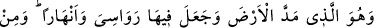
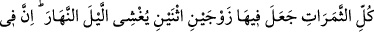
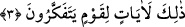

3. Yeri döşeyen, onda sâbit dağlar ve ırmaklar yaratan, orada bütün meyvelerden
çifter çifter yaratan O’dur. Geceyi de gündüzün üzerine O örtüyor. Şüphesiz
bütün bunlarda düşünen bir toplum için ibretler vardır.
“Yeri döşeyen” uzunluk ve genişlik vererek yeri yaydı ki ayaklar yere sağlam bassın,
canlılar bir bölgeden diğerine gidebilsin. Yâni, Allah yeri daha baştan uzatılmış olarak
yaratmıştır, yoksa arz bir yerde toplu, kesif bir haldeydi de Allah onu buradan yaydı,
mânâsında değildir.
Yeryüzünün böyle yayılmış olması, küre şeklinde olmadığını göstermez. Çünkü
yeryüzünün tamamı çok büyük bir cisimdir. Böylesine büyük olan bir kürede ise her
bölümü bir satıh gibi görülür.
Bazıları şöyle demiştir: Yeryüzü bizim yatağımızdır. Bizim anamız olmuştur.
Geçimimiz ondadır ve oraya defnediliriz.
“Onda sâbit dağlar” var etti. Yâni Allah yeryüzünün hareket edip kımıldamaması ve
üzerinde karar kılınması için kazık gibi sâbit dağlar var etti. Yeryüzünün sarsılması ise
Allah’ın azametinden kaynaklanıyordu.
İbn Abbas (r.a.) der ki: “Yer üzerinde var edilen ilk dağ, Ebû Kubeys’tir.”
el-Kamus’ta şöyle diyor: “Ebû Kubeys, Mekke’de bir dağdır. Mezhicli bir demirciye
izâfeten bu adı almıştır. Çünkü bu bölgede bina yapan ilk kişi oydu. Bu dağa “el-Emîn”
de denir. Çünkü rükn-i haceru’l-esved ona emânet edilmişti.”
İnsânü’l-uyûn’da der ki: “Yer üzerinde var edilen ilk dağ Ebû Kubeys’tir.” Buna göre
ebü’l-cibâl/dağların atası diye adlandırılması, ve en üstün dağ olması gerekir. Oysa
Süyûtî’nin Hz. Peygamber (s.a.)’in: “Uhud bizi sever, biz de Uhud’u.”[103] hadîsine
dayanarak söylediği gibi dağların en üstünü Medine’deki Uhud dağıdır.
Mesnevî’de şöyle denilir:
Zülkarneyn Kaf dağı tarafına gitti.
Dağın zümrüt gibi saf olduğunu gördü.
O dağ, bütün dünyayı çepçevre kuşatmıştı.
Dağın büyüklüğüne, benzeri olmayışına şaştı kaldı.
Dedi ki: Sen dağsan, öbür dağlar ne?
Senin büyüklüğünün yanında onlar birer oyuncak.
Kaf dağı dedi ki: “O dağlar benim damarlarımdır.
Güzellikte, büyüklükte hiç biri benim gibi olamaz.